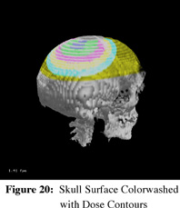

VISUALIZATION OF THE BORON NEUTRON CAPTURE THERAPY
TREATMENT PLANNING PROCESS
by
Cory Lee Albright
A thesis submitted in partial fulfillment
of the requirements for the degree
of
Master of Science
in
Computer Science
MONTANA STATE UNIVERSITY
Bozeman, Montana
April 1999
ACKNOWLEDGEMENTS
This work was sponsored by the U.S. Department of Energy, Office
of Energy research, through the Idaho National Engineering and Environmental
Laboratory under Contract DE-AC07-94ID13223.
Thanks are given to the Visible Human Project for the Computed
Tomography images upon which the visual reconstructions in the thesis are
based.
Thanks are also given to Dan Wessol of the INEEL for providing
me with the incredible opportunity of visualization research and application.
TABLE OF CONTENTS
BACKGROUND INFORMATION
Boron Neutron
Capture Therapy
BNCT at MSU/INEEL
Treatment
Planning Process with SERA
OpenGL
INTRODUCTION
Problem Statement
REGION RENDERING
Phase I
Wireframe
Rendering
Univel
Rendering
NURBS
Rendering
Phase II
Solid
Rendering
Polygonal
Surface Rendering /Marching Cubes
MEDICAL DATA RENDERING
Single Slice Inlay
Volume Rendering
DOSE CONTOUR RENDERING
Colorwashed
Slices/Surfaces
Contour Surfaces
VISUALIZATION TOOLS
Axes
Transparency
Clipping
Particle Track Inlay
Beam Line Tools
LIST OF TABLES
1. Timing
Results for Polygonal Surface Extraction Algorithms
2. Timing
Results for Medical Data Rendering
LIST OF FIGURES
1. 2D pixel neighbors, 3D univel neighbors
2. Region Tracing Problem Case
3. Stack Solution to a Dead End
4. Wireframe Rendering
5. Univel Rendering
6. NURBS Orders
7. Direct vs. Degree Control Point Sampling
8. Solid Rendering
9. A Marching Square
10. The 16 Marching Squares Cases
11. A Marching Squares Example
12. An 8-Cell
13. A Comparision of Crossing Polygons generated by the 8-Cell and
Marching Cubes
14. 8-Cell Algorithm with Surface Normals
15. 8-Cell Algorithm with Vertex Normals
16. Medical Slice Inlay
17. Volume Rendering
18. Volume Rendering with Alpha Culling
19. Colorwashed Slice Inlay
20. Skull Surface Colorwashed with Dose Contours
21. Dose Contour Surfaces
22. Transparent Regions
23. Axial Clipping
24. Axial Clipping with Medical Image Capping
25. Particle Track Inlay
26. Beam Line Camera View
27. Beam Line Camera View with Ring Aperture
28. Beam Line Slice with Clipping
The focus of this thesis is the development of a visualization
module (Sera3d) for the Simulated Environment for Radiotherapy Applications
(SERA) software package, under development at Montana State University
and the Idaho National Engineering and Environmental Laboratories.
In 1997, a highly efficient particle tracking method was developed
to speed the Monte Carlo transport calculations, which simulate the neutron/boron
interactions in the anatomical geometry. The new particle tracking
method required a uniform volume element (univel) description of the geometry.
The uniformity allowed for fast tracking through highly efficient indexing
schemes and integer-based arithmetic operations. The adoption of
the univel descriptions resulted in the restructuring of the software package.
With the restructuring of the older software package into SERA,
and the advances in computer graphics hardware, the addition of a visualization
module was undertaken to provide a visual understanding of all aspects
of the proposed treatment plan.
The three dimensional rendering in Sera3d is built on the OpenGL
graphics library, while all of the user interfaces and components were
developed using the Motif toolkit in an X11 window environment.
The univel geometry description provides great storage flexibility;
virtually any anatomical structure can be represented. Sera3d is
constructed with this flexibility mind, allowing the three dimensional
reconstruction of any region stored with this univel description.
Sera3d also provides various tools for further examination of
the region reconstruction. Multiple rendering windows, each through
a different camera, as well as full model rotation capabilities provide
views from any angle. Two clipping planes are provided along each
of the three major orthogonal axes, offering a direct look into the interior
of the geometry. Likewise, varying the values of region transparency
allow views into the inner regions. Through the use of texture mapping,
an image slice can be inlaid in any arbitrary direction within the reconstruction.
This inclusion of the original data allows further confirmation of the
surface geometry. Additionally, a camera view along the beam line
is provided, as well as image slices perpendicular to the beam line.
One of the unique elements of this system is that the same surface
rendering methods used to display the reconstructed anatomical objects
are used to display the isodose contours. This provides for a striking
presentation of the radiation dose data and also provides a useful tool
for the clinician in developing an efficacious treatment plan. A
second method for displaying the dose data is colorwashing the medical
image volume with the isodoses.
This thesis includes the visual results of the applied techniques,
as well as visions for the further integration of Sera3d into the SERA
software package.
Boron Neutron Capture Therapy (BNCT) is a treatment modality engineered
for selectively irradiating certain tumor types. The patient is injected
with a drug containing a stable isotope of boron, B-10, which is capable
of accumulating in the tumor tissue. When irradiated with low energy
(thermal) neutrons, a B-10 atom will react with a neutron (neutron capture).
This capture results in the splitting of the B-10 nucleus which releases
an alpha particle and a lithium nucleus directed opposite each other with
significant energy. This reaction is very damaging to cells within
approximately 14 micrometers, roughly the diameter of one or two cells.
Thus tissue damage is very localized to areas with B-10 loaded cells.
Glioblastoma multiforme (GBM) accounts for about 80% of all malignant
gliomas, and continues to be the most intractable brain tumor. It is diagnosed
in approximately 7000 people in the United States each year. GBM is characterized
by the highly infiltrative growth of dendrils. Surgical removal of the
tumor without considerable loss of healthy tissue is not achievable due
to the dendrils, and an incomplete removal often results in regrowth of
the tumor. Conventional therapies are not sufficiently tumor specific and
thus produce extensive damage to the normal brain tissue when given in
doses high enough to adequately address the infiltrating GBM cells.
The selective delivery of radiation dose from BNCT lends itself well
to the problematic dendrils of GBM. Because of the abnormally high
growth rate of the cancerous cells, they take in more of the Boron compound
than normal brain cells. With a higher count of B-10 in the tumor
cells, a more selective radiation dose is achieved. This selective
radiation dose allows the adequate treatment of the infiltrated dendrils
with minimal damage to normal tissue.
Since 1991, Montana State University (MSU) and the Idaho National
Engineering and Environmental Laboratory (INEEL) have been developing
treatment planning software for BNCT.
The early version of this software package was called Boron Neutron
Capture Therapy Radiation Treatment Planning Environment (BNCT_RTPE).
Segmented regions of interest derived from the medical images were fit
into Non Uniform Rational B-Splines (NURBS) surfaces. In 1997, a
new fast particle tracking method through uniform volume elements (univels)
provided a significant speed increase in the tracking calculations, and
thus the univel based region representations were adopted.
Development commenced on a new and improved treatment planning
system called Simulation Environment for Radiotherapy Applications (SERA),
which was based upon the univel representation.
The new package now consists of separate software modules: SeraImage,
SeraModel, Sera3d, SeraDose, SeraCalc, SeraPlot and SeraPlan. The
modules provide the necessary functions to conduct a complete BNCT treatment
plan.
The first step in the planning process is to obtain the diagnostic
images either with Magnetic Resonance Imaging (MRI) or Computed Tomography
(CT). Next, the first module of the software, SeraImage reads the
medical slices, for certain formats, and converts them into an internal
format used by the other modules.
The second and most time consuming step of the process is segmenting
the images into regions of interest such as scalp, skull, brain, target,
and tumor. SeraModel provides manual and semi-automatic tools for
segmenting. The segmented images are then stacked into a univel (uv/uvh)
file representing the treatment volume.
At this point, Sera3d, the visualization module can reconstruct
the segmented regions as well as the medical slices into a 3-dimensional
rendering. The Sera3d module will be the focus of this thesis.
The next step in the process is to run the treatment plan simulation
with SeraCalc. SeraCalc is a Monte Carlo simulation, which tracks millions
of particle paths through the regions and calculates the radiation doses
associated with the treatment.
At this point, the radiation doses to the regions are available
and can be superimposed over the original 2-dimensional medical images
with SeraDose. For a 3-dimension view of the doses, Sera3d
provides the region surfaces colorwashed with the dose contours, as well
as dose contour surfaces.
SeraPlot and SeraPlan provide dose depth plots and dose volume histograms
to assist in the treatment verification.
Sera3d uses the OpenGL graphics library for the 3-dimensional
rendering. OpenGL was introduced in 1992, and has become the industry's
most widely used and supported 2D and 3D graphics application programming
interface (API) [10]. It is a vendor-neutral graphics standard, guided
by the OpenGL Architecture Review Board, an independent consortium.
OpenGL has proven itself in stability and portability, producing consistent
visual results on a wide variety of platforms.
The SERA software package has a large amount of data to process
in developing a treatment plan. The univel regions are stored in
one large 3-dimensional array, at the same resolution as the original medical
images. A two millimeter image set of a human head produces around
128 slices, each being 256 x 256 pixels, resulting in around 8,388,608
univels. When the medical images are included there are over 16 million
data points.
There are also many different elements of the treatment plan included
in the visualization. Reconstruction of the segmented regions, superimposed
with the original medical images provides the model for the treatment plan.
The patient's model must then be orientated in the path of the beam. The
orientation determines the success of the simulation. Finally, the
results of the simulation in the form of radiation isodose contours provide
the verification of the proposed treatment plan. All of these aspects
of the treatment need to be included in the visualization process with
Sera3d.
The following sections discuss the techniques used to visually reconstruct
the large amount of data, as well as the various tools provided for investigation.
The rendering of the labeled (segmented) regions stored in the block of data went through two phases, each a different approach at extracting the region boundaries for display.
The first technique used for determining the region boundaries was through the use of a region tracing algorithm. The region tracing algorithm was applied to each 2-dimensional slice that contained the current region, returning the points on the outer boundary for that region. The advantage of using a region tracing program was that the boundary points were returned in an orderly fashion and consistent between slices, which was needed for a smooth NURBS surface representation which will be discussed shortly. The region tracing algorithm had some difficult obstacles to overcome.
Wireframe Rendering
Once the outlines of the regions were determined, the points
could be reassembled into their x, y, and z locations, with the z value
being the axial location of the current slice. Rendering the points
returned by the tracing algorithm in three space provided a nice wireframe
outline of the anatomical regions, as seen in Figure 4. Displaying
as points also allowed the speed necessary for smooth interactive frame
rates while rotating.
Univel Rendering
To provide the user with an accurate representation of what the
segmentation into univels looked like, the boundary points of the regions
could be rendered as univels. Each point became a parallelepiped,
with 6 polygons. The univel rendering, as seen in Figure 5, provided
a visual look at the univels used by the Monte Carlo transport simulation,
SeraCalc. With the introduction of polygons into the rendering, a
lighting model had to be specified. With the very high number of
polygons, and the lighting calculations, the redraw performance rates were
substantially reduced with the univel representation.
The goal for representing the regions in 3-dimensions was smooth polygonal surfaces such as those provided by Non-Uniform Rational B-Splines (NURBS). To build a NURBS surface, a stacked grouping of 2-dimensional mesh points represents the control points for the NURBS routines to approximate. Once the stacked 2-dimensional mesh of control points is provided, the mathematical surface is calculated based on the NURBS order. The order controls the approximation of the surface to the control point and can be linear, quadratic, or cubic. A linear order will cause the surface to simply connect the control points, where a quadratic or cubic order will provide a smooth surface approximation of the points. Figure 6 provides a visual comparison of the three NURBS orders; the higher the order, the smoother the surface. However, the smoother surface will tend to depart further from the original control points, thus losing accuracy from the original data.
After determining that the NURBS surfaces lacked the flexibility
needed to accurately represent the regions, new rendering techniques were
explored, and NURBS were abandoned. The removal of NURBS removed
the region tracing problems. Since a the regional outlines no longer
needed to be returned in a specific order, a very simple neighbor checking
algorithm could be used for extracting the regional boundary pixels.
The algorithm for extracting the regional boundaries is a true
3-dimensional algorithm, unlike the regional tracing algorithm, which traced
on a stack of 2-dimensional slices. The slices are stored in
a 3-dimensional data block, with the 2-dimensional slices stacked one on
top of another. The algorithm simply marches through the pixels in
the data block, watching for the region of interest. When a region
pixel is encountered, all 6-neighbors (Figure 1) are examined. If
any of the 6-neighbors is not the current region, the region pixel is a
border pixel and is thus added to the list for the current body.
This simple algorithm proved to be very effective at extracting
the boundaries of the regions, providing a clean, interactive, wireframe
rendering. One disadvantage of this algorithm was that it would not
only extract the outer boundary of a region, but the inner boundary as
well. For example, when extracting the boundary of the scalp, the
outer boundary where it bordered the buffer would be extracted, as well
as the inner boundary with regions such as the skull, sinus, and brain.
These inner boundaries were not necessary and would slow as well as clutter
the rendering of the regions. To prevent the extraction of inner
boundaries, the algorithm needed to know the regional hierarchies.
To provide this intelligence, regional hierarchy information was stored
in a file.
Solid Rendering
With the segmented regions being solid in nature, it was clear
that a solid rendering method would provide a better feel for the regions.
To obtain a solid rendering, a direct mapping from a data point in the
data block to a vertex in 3-space was made. In effect, it is a complete
regional extraction. To provide a solid appearance, the size of the
point projected onto the screen needed to be scaled. If the size
of the projected point is at least the size of the largest gap between
it and its neighbors, the gap would fill in, leaving a solid appearance.
When rendering as single points, depth cannot be determined without
shading the regions. In OpenGL, points cannot be passed through the
lighting model, therefore measures had to be taken to provide shading for
the solid model. To provide the shading for the regions, the shading
was pre-calculated for each point. For this pre-calculated shading,
a single set light source was assumed. Each border point of the region
is then checked to determine whether it was on a border facing towards
or away from the light source. This would determine whether the standard
color of the region should be lightened or darkened. The pre-computed
shading provided a nice shaded solid model with one small disadvantage;
the shading could not change as the region was rotated without applying
the lighting model for each frame. However, because the lighting
calculations could be avoided altogether, the time to redraw the solid
model was greatly improved.
Polygonal Surface Rendering/Marching Cubes
With the removal of the NURBS, a new approach to obtaining smooth
polygonal surfaces was needed. The first approach tried was the idea
of a neighbor fan.
The neighbor-fan algorithm was based on the boundary
extraction algorithm, in that it would march through the data block checking
for the current region. When the region was encountered, it would
check its 6-neighbors (Figure 1) to see if it was a border point.
If it was a border point, it would then check all of its 26-neighbors (Figure
1) to determine which of them were also border points. The next step
would be to build a fan of triangular polygons to each of its neighbors
that were themselves border points.
The difficulty of this approach was determining the correct sequence
in which to connect the neighbors with the triangle fan. To specify
the front face of a triangle, the vertices must be connected in a counter-clockwise
order. Applying the neighbors in a consistent order did not
produce the desired effects. The polygons would consistently face
a single direction, which was incorrect on the opposite side of the region
where they should face the opposite direction. A polygonal lookup
table could be implemented, but with 26-neighbors, 226 cases are needed,
which is not a practical table size, on most computer systems. Due
to this difficult vertex ordering situation, a different approach was taken.
What was needed was an algorithm that could take a block of data
with a distinct region inside and extract the polygonal boundary of that
region. With a little research, the Marching Cubes approach [7, 8]
looked promising.
To
begin the explanation of the Marching Cubes algorithm, it is beneficial
to start with the 2-dimensional version known as the Marching Squares algorithm.
The input to the Marching Squares algorithm is a 2-dimensional array from
which the regional boundary is to be extracted. The Marching Squares
algorithm begins by examining each "square" of the array. A square
in the 2-dimensional array is the area defined by four adjacent array elements.
Figure 9 shows an example of a marching square. In an nxn array, there
will be (n-1) x (n-1) squares to examine.
Since each square has four array elements as corners and each
array element can either be inside the region (represented as the black
dots) or outside (represented as open dots), there are 24, or 16 different
cases for a marching square. Because of the small number of cases,
all of the possible boundary crossing lines can be built into a simple
lookup table. The cases are respresented in Figure 10.
To extract the regional boundary, the algorithm simply marches
through each square in the array and finds its case in the table to determine
the crossing lines. Figure 11 demonstrates the border extraction
of a region by the Marching Squares Algorithm.
The Marching Cubes algorithm is simply the extension of the Marching
Squares algorithm into 3-dimensions. In 3-dimensions, the square
becomes a cube while each corner of the cubes still represents an array
element. In this case, each array element is representing a univel,
so each corner of the marching cube is representing a univel. A marching
cube is commonly known as an 8-cell (Figure 12).
In 3-dimensions, lines can no longer divide the crossing space,
instead planes (polygons) are used. To determine how polygon(s) cross
through an 8-cell, just as in the Marching Squares algorithm, each of the
corners is examined to see if it is inside or outside of the region.
Now with 8 corners, each having two states, there are 28, or 256 possible
8-cell cases. The polygons and their surface normals are pre-calculated
into a lookup table, allowing the algorithm to quickly march through and
determine the polygonal crossings of each 8-cell in the data block, resulting
in a nice polygonal surface.
A small modification was made to the Marching Cubes algorithm
for use in Sera3d. The original Marching Cubes algorithm used the
midpoints of each edge for the vertices of the crossing polygons.
For the modified algorithm, called the 8-cell algorithm, instead of connecting
the midpoints of each edge, the corners of the 8-cell were connected to
construct the crossing polygons. Three cases of the crossing polygons
generated by the two algorithms are compared in Figure 13.
|
|
|
|
|
|
|
|
|
|
|
|
|
|
|
|
|
|
|
|
To improve the validity of the visualization, the original medical
data was introduced into the rendering. The first method for inlaying
the medical data was very crude. For each non-buffer pixel in the
image, a square polygon was constructed and colored with the pixel's gray
value. This produced a fine looking slice, but at the cost of rendering
speed. With the slices at a resolution of 256 x 256 and with the
buffer making up slightly over half of pixels in the image, this method
would add around 25,000 polygons for the slice.
The medical slice rendering was greatly enhanced by a texture
mapping process. In normal 2-dimensional texture mapping, an image
is wrapped around the surface of a 3-dimensional object. This 2-dimensional
method would work to map the image of a medical slice onto a single square
polygon, but a 3-dimensional texture mapping approach was even more suited
to this rendering.
Three-dimensional texture mapping starts with a block of data,
in this case a stack of uniformly spaced 2-dimensional images. When
texturing a 3-dimensional object with a 3-dimensional texture map, it is
as if the object is "cut" out of the block. This is analogous to
having a block of wood and cutting the object, such as a teapot out of
it. Then by drawing a single square polygon and mapping the corners
of the polygon into the 3-dimensional texture block, we can inlay the single
axial slice. It is easy to see that with the freedom to map the corners
of the polygon into the texture block, not only can an axial slice be rendered,
but any oblique slice as well. This in itself provides a useful tool
for investigating the medical data.
Accompanying texture mapping is a useful process called alpha
culling. Alpha culling is used to remove certain pixels of the textured
polygon from being rendered. Each texel (a 3-dimensional pixel in
the texture map) is stored with an alpha value. With alpha culling
enabled, pixels of the polygon mapping to a specified alpha value can be
culled, or completely removed from the rendering. In this case, the alpha
value for each pixel is set to that pixel's gray value. When alpha
culling is enabled, and the low alpha values are culled, the buffer area
can be removed from the inlaid slice, as seen in Figure 16.
The texture mapping process has been widely accepted in the computer
graphics environment, with almost all graphics accelerated hardware supporting
it. With the texturing being done in hardware, it is an extremely
fast process, with fully interactive frame rates.
The OpenGL package provides the routines for both 2 and 3-dimensional
texture mapping. As a parameter to the texturing process, the application
of the texture to the polygon can be controlled. When a polygon pixel
is mapped into the texture map, its color can be determined two ways.
The first, called GL_NEAREST, simply picks the nearest texel for coloring
the polygon pixel. The second method called GL_LINEAR, linearly interpolates
between the 8-neighboring texels to determine the coloring for the pixel
of the polygon. The linearly interpolated texturing process provides
a smoother rendering of the medical data. This is a large advantage
in this case, where the x and y resolution is typically 1 mm, while the
z resolution (slice spacing) is around 4mm. This lower z resolution
results in a large stepped effect in the renderings, including the medical
image rendering. With the use of the linearly interpolated 3-dimensional
texture mapping, this stepped effect is almost eliminated for all slices.
Another
rendering technique is built from the advantages of the texture mapping
process. Volume rendering provides a unique, solid reconstruction
directly from the original medical data. Volume rendering with the
3-dimensional texture mapping is a simple procedure. To accomplish
this, a stack of textured polygons is rendered; in this case 256 slices
are rendered. When the alpha culling feature is enabled, all of the
buffer pixels can be thrown out, leaving the solid section of medical data,
as seen in Figure 17. The facial detail attained from the MRI or
CT images is quite realistic. Details such as the skin and ears are
well defined. With the volume rendered CT images, alpha culling can
also remove the soft tissue leaving the bone. Figure 18 shows the
same volume rendering with a higher alpha culling value.
Details such as a bone flap, resulting from surgical removal of the tumor,
including the staples used to patch it, have even been seen.
|
|
|
|
|
|
|
|
|
|
|
|
Timing results for the rendering of the medical data are given in Table
2. The tests were run with the 4mm data and the volume rendering
used 256 inlaid slices.
The main goal of the SERA software package is to provide the user
with a verified treatment plan. To do this, the seraCalc module tracks
a very high number of simulated neutron histories, to reduce the probability
of error. The neutron histories are then tallied to produce a 2-dimensional
grid of dose contour values that can be mapped back onto its corresponding
medical slice. The rendering of the dose contours in Sera3d was done
using both the texture mapping process as well as the surface rendering
process.
The first method of visualizing the dose contours was done by
colorwashing the texture map with the dose contours. After the 3-dimensional
dose data files are read into the program, the user is able to select which
contour level(s) they would wish to view. Then the 3-dimensional
texture map is reconstructed. The original 3-dimensional texture
map held only gray levels, thus requiring only two channels per texel:
luminance (the gray value) and an alpha channel. Since colors are
now introduced to the texturing, four channels are needed for each texel:
red, green, blue and the alpha channel. This results in a texture
map size twice as large as the original.
The
colorwashing of the medical image texture map is done during the reconstruction
process. As each texel is being constructed, it is mapped into the
dose contour data grids to determine whether that texel should be colored
to the user's specified contour coloring scheme. The mapping procedure
is currently done on a 2-dimensional basis, due to the 2-dimensional nature
of the contour grids. When the texels are being constructed, they
are mapped using floating coordinates into the corresponding contour grid
(for their slice). The four nearest values in the contour grid are then
linearly interpolated, based on the floating coordinates to determine the
contour value. The contour value is then matched to the coloring
scheme of the user to determine the final coloring for that texel.
Once the texture map is rebuilt with the colored texels, any
inlaid slice or volume rendering will be colorwashed with the dose contour
levels.
Due to the flexibility in the texture mapping process, the polygons
making up the regional surfaces can be textured as well. As the surfaces
are built, each vertex of every polygon is assigned not only x,y,z physical
coordinates, but x,y,z texture coordinates as well. Since any polygon
can be textured, when the texture mapping is enabled, the regional surfaces
become textured with the medical data also. Thus when the 3-dimensional
texture map has been colorwashed with the dose contours, the regional surfaces
themselves show the contour colorwashing when rendering. For instance,
the user could choose to look at the 3-dimensional surface of the tumor
and see the areas on the surface where the 95 percent dosage level coincides
with the tumor.
The second method for visualizing the dose contours was to construct the actual surface of the user specified contour level(s). Since the surface extraction routines were already in place, they were used for the contour surfaces as well. The surface extraction routines expected a 3-dimensional block of data in which to extract the surface from, so the contour grids were mapped into a stack of slices, with the slices being the same resolution as that of the slices in the univel geometry file. With the resolution the same, the size and positioning of the contour surfaces against the regional surfaces would match correctly. Once the dose contour data block was constructed, the surface extraction routines are called to extract the dose contour surfaces. The fully 3-dimensional contour surfaces again follow the users contour coloring scheme and are included in the rendering as if they were regional surfaces, as seen in Figure 21.
The orientation of the axes in the SERA software package went through many revisions. After finalizing a set orientation, the axes were added to the rendering, to give the user the correct orientation for the treatment plan. The directions are based on a head model: superior, inferior, anterior, posterior, right, and left.
The
use of transparency in the regional rendering provides the user with the
ability to view the inner regions, as well as other internal characteristics
of the treatment plan such as the internal beam line. When rendering
regions with transparency, the z-buffering depth test is not sufficient
for a correct rendering. The order in which the regions are rendered
is important. For instance, if the brain is to be rendered inside
of the transparent scalp, the brain must be rendered first. The reason
for this is that if the transparent scalp is rendered first, when blending
the semi-transparent scalp pixels with what is already in the z-buffer,
the z-buffer is empty. Then when the brain is depth-tested, it will
be removed, leaving only a transparent scalp with no brain inside.
Therefore, the regions must be rendered in the correct order, from inside
out.
To provide the correct rendering order, the regional hierarchy
table used for the boundary extraction algorithm was consulted. By
traversing the regional hierarchy table, the correct rendering order for
the regions is obtained, thus allowing the correct transparent rendering.
Another
useful tool in the visualization process is clipping the rendering. To
clip the rendering, a clipping plane is specified, and then rendering primitives
on a specified side of the plane are thrown out of the rendering pipeline.
The clipping plane then allows the user to cut away portions of the rendering,
providing a view into the inner regions.
The OpenGL package provides up to six simultaneous clipping planes.
These six clipping planes are oriented in Sera3d to provide two clipping
planes in each of the 3 orthogonal directions, axial, coronal, and sagittal.
To help the user in understanding the positioning of the regions
as they relate to the original medical data, the ability to cap the clipping
plane was provided. To cap the clipping plane, first the region surfaces
were clipped, leaving an open, hollow cut as seen in Figure 23. Then
a single slice through the medical data in the corresponding clipping plane
direction was inlaid at the position of the clipping plane. Thus
when cutting away a portion of the rendering, it appears as if the medical
data was simultaneously cut through. An example of clip capping can
be seen in Figure 24.
At
the completion of the SeraCalc simulation, a small sampling of encountered
particle tracks is output. The particle tracks include those of low,
medium, and high gamma energies, low, medium, and high energy neutrons,
and lost particles. Also included in the sampling is the beam line
position used in the simulation.
The ability of Sera3d to read and display this sampling of particle
tracks provides a useful tool for visualizing the simulation.
In the testing phases of the new particle tracking algorithm, viewing the
particle tracks provided a visual verification of the calculated tracks,
and made it possible to see incorrect calculations, such as lost particles.
With
the introduction of the beam line position from the particle track sampling,
various beam line tools were added to the visualization.
The first was a beam line camera. The beam line camera
allows the user to interactively slide along the path of the beam, viewing
the regions as the beam would. This beam's eye view along with viewing
crosshairs provides a clear view of beam intersection with the anatomical
regions. A beam line aperture ring was also added. When the
beam line aperture is enabled, the three dimensional projection is changed
from a perspective projection to a parallel projection, providing the ability
to correctly measure the regions on the screen. The adjustable aperture
appears as a circle around the center of the screen. The aperture
provides the ability to specify a danger zone diameter for the beam, and
the parallel projection will correctly show what regions will be intersected
by the beam's diameter.
Along
with the beam line camera is the ability to inlay beam slices. A
beam slice is an oblique medical slice perpendicular to the beam. The beam
slice has a corresponding beam line clipping plane which works as a typical
clipping plane only it is perpendicular to the beam. Both the beam
line clipping plane and the inlaid beam slice are able to interactively
slide forward and back along the beam path.
Sera3d also provides an interactive beam positioning system.
This system allows the user to specify the start and end positions of the
beam. The beam positioning can be done interactively while viewing
through the beam camera, crosshairs, and aperture to determine a safe beam
position relative to the anatomical regions.
With all of the various visualization tools available in Sera3d,
and their ability to be used in conjunction, there are numerous options
for rendering and viewing. For example, the beam slice can be rendered
with the transparent target region to witness exactly how the beam line
within the target passes through the original medical data. Overlaying
the 90 percent dose contour surface with the target region to determine
whether the treatment is an accurate fit, or clipping the colorwashed volume
rendering to view the dose contours on a medical image reconstruction both
provide accurate and informative views of the treatment plan previously
not available.
Overall, Sera3d adequately provides powerful visualization tools
to the treatment planning process with the SERA software package.
Sera3d accomplishes the goal of visualization software, and my goal in
particular, which is to provide the user with a clear, more natural 3-dimensional
look at the data in its various states.
There are many improvements that can be applied to the SERA software
package in regards to Sera3d. What I envision for Sera3d in the future
would be to play a major role in almost all aspects of the treatment process.
Instead of simply being a viewing tool, it would be a controlling tool
also.
The sequence through the modules would be somewhat different.
The first step is still the unavoidable process of obtaining and segmenting
the patient's image set. From here, the information is passed into
Sera3d for controlling the rest of the process.
Sera3d then would provide the visualized regions and medical
data for verification of the segmenting, as it does now. Next, Sera3d
would be used for visually positioning the patient in the path of the beam,
and for setting up the simulation.
Sera3d and SeraCalc would be merged together, thus allowing the
interactive patient positioning to interface directly with the simulation.
This way, when a beam position is determined, the simulation can be run
from Sera3d. This would also allow a visual display of the simulation
as it is running if desired. It would be ideal to be able to interactively
position the beam line and visually see the contours update in real-time.
With the current rate of advancement in the computer industry, the power
required for this is not too far into the future.
At the end of the simulation, the dose contour information could
then be incorporated straight into the rendering as 2-dimensional slices
or the 3-dimensional surfaces. With the adoption of a few features
from SeraDose, such obtaining the dose value by clicking on a specific
position, the SeraDose modules could be eliminated.
Another addition to Sera3d would be the ability to click and
select regions in the rendering to view dose volume histograms and dose
depth plots.
3. Neider, J; Davis, T; Woo, M, OpenGL Programming Guide Release 1, Addison-Wesley Publishing Company, Inc., Reading, Massachusetts, 1993.
4. OpenGL Programming Labs 97, Silicon Graphics, Texas Instruments, 3Dlabs, 1997.
5. Young, D.A., The X Window System Programming and Applications with Xt Second Edition, Prentice-Hall, Inc., Englewood Cliffs, New Jersey, 1994.
6. Kelley, A.; Pohl, I, C by Dissection Second Edition, Benjamin/Cummings Publishing Company, Inc., 1992.
7. Foley, J.D.; van Dam, A.; Feiner, S.K.; Hughes, J.F.; Phillips, R.L., Introduction to Computer Graphics, Addison-Wesley Publishing Company, Inc., Reading, Massachusetts, 1994.
8. Schroeder, W.; Martin, K; Lorensen, B., The Visualization Toolkit Second Edition, Prentice-Hall, Inc., Upper Saddle River, New Jersey, pp. 159-164, 1998.
9. Lorensen, W.E.; Cline, H.E., "Marching Cubes: A High-Resolution 3D Surface Construction Algorithm", Computer Graphics (Proc. SIGGRAPH 87), ACM Press, New York, Vol. 21, No. 4, pp. 163-169, 1987.
10. Heckbert, P.S., Graphics Gems Volume IV, Academic Press, Inc., San Diego, California, pp. 324-333, 1994.
11. Gonzalez, R.C.; Woods, R.E., Digital Image Processing, Addison-Wesley Publishing Company, Reading, Massachusetts, 1992.
10. Opengl, The Industry's Foundation for High PerformanceGraphics,
ArtLab,
Oct. 15, 1997, <http://www.opengl.org>.